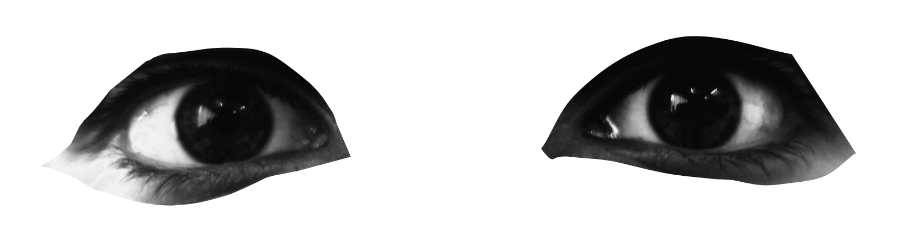
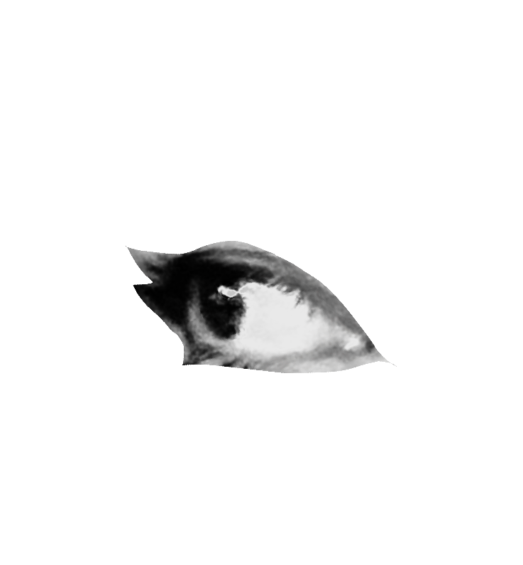

Who am I?

Haiiiii!!!!! halloo(„• ֊ •„)੭"૮₍ •⤙•˶₊˚ෆ !!!! My name is Yenia. This is actually my thrid blog? me thinks. The first blog I made it when i was 14, my second blog when I was 17. And now i am 21 (it's 2026).
✦ . ⁺ . ✦ . ⁺ . ✦
Anyways, let's me talk about who am i. I am an artist, i love painting with oils and gouache. I am also currently studying Computer SCience and planning a double major with Astrophysics. I am working as technical support
I have been on technology since I was a kid. When I was like 8 with my iPad, I remember doing a jailbreak on it because I wanted to have custom features. I always liked inventing stuff on my mum’s computer. Later on, I got an interest in programming when I was in middle school studying algorithms flow charts, Visual Basic, and Excel macros. Later, I discovered SpaceHey, which led me to discover Neocities, and I started getting an interest in website development. This whole page is made by me with HTML and CSS mostly.
✦ . ⁺ . ✦ . ⁺ . ✦
I also love stars so much. Apart from computer science. I wanted to study physics, specifically astrophysics bc I wanted tod edicate msyelf to study stars. My favorte planet is Saturn bc of the the rings. I always though it was avery pretty planet to draw. And BRUH mf has so many moons what. My second favorite planet is Venus czu it represents beauty and femininity

What is the goal of this website???
be a personal blog! yay!!
I will create two sections on this website. The first section would be for uploading pictures from my dialy life. i wll try to update as much as I can. I will addd some thoughs to earch picture.

My social Media!!!
I hope you like my website ദ്ദി(｡•̀ ,<)~✩‧₊
